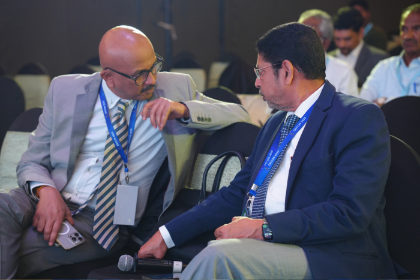

Build a focused learning plan.
Scan the four scientific pathways, identify practical sessions and make room for faculty exchange.
13th International Diabetes & Endocrine Conference
Choose the conference journey that matters to you—then move straight from clinical interests to the next useful action.
Le Méridien
Coimbatore
Start with your role
The information stays the same; the route changes to place your priorities first.
Scan the four scientific pathways, identify practical sessions and make room for faculty exchange.
Explore oral and poster presentation opportunities, scientific themes and programme contacts.
Review access, safe-build and venue requirements before requesting an exhibitor pack.
Find venue information, travel guidance and a practical shortlist of nearby stays.
One programme, four pathways
Precision care, technology, complications and comprehensive management.
Diagnostic reasoning, contemporary treatment and complex disorders.
Metabolic and endocrine health before, during and after pregnancy.
Cardiovascular, infectious and internal-medicine perspectives.

Why DECON
DECON began in 2014 as the Diabetes Summit with more than 400 registrations and has grown into an international forum for practical learning and professional exchange.
The practical layer
7–8 August 2027 · Le Méridien, Coimbatore